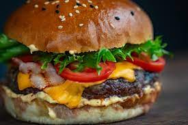

The Ultimate Homemade Burger Recipe

There's nothing quite like a perfectly cooked, homemade burger. This recipe will guide you through creating a juicy patty, flavorful toppings, and a toasted bun for a burger experience that rivals any restaurant.
Ingredients
For the patties (makes 2 burgers):
- 1 pound ground beef (80/20 lean-to-fat ratio is recommended)
- 1/2 teaspoon salt
- 1/4 teaspoon black pepper
- 1/4 teaspoon garlic powder
- 1/4 teaspoon onion powder
- Optional: Pinch of cayenne pepper (for a kick)
- 2 hamburger buns
For the toppings (choose your favorites!):
- Lettuce leaves
- Tomato slices
- Red onion slices
- Pickles
- Cheese slices (cheddar, swiss, pepper jack, etc.)
- Dijon mustard
- Ketchup
- Mayonnaise
Instructions
- **Prepare the patties:** In a large bowl, gently combine the ground beef, salt, pepper, garlic powder, onion powder, and cayenne pepper (if using). Avoid overmixing, as this can make the burgers tough. Gently form the mixture into two equal patties, slightly larger than the hamburger buns.
- **Heat a grill or pan:** Preheat your grill or a large skillet over medium-high heat. If using a pan, add a drizzle of oil to prevent sticking.
- **Cook the patties:** Grill or pan-fry the patties for 3-4 minutes per side for medium-rare, or longer for desired doneness. (An internal temperature of 160°F is recommended for safe consumption.)
- **Toast the buns (optional):** While the patties cook, lightly toast the hamburger buns on the grill or in the pan for a warm and slightly crispy texture.
- **Assemble the burgers:** Once cooked, place the patties on the toasted buns. Add your chosen toppings and condiments. Enjoy your delicious homemade burger!
Tips
For perfectly juicy burgers:
- Don't overmix the patty mixture.
- Use a well-seasoned cast iron skillet for extra flavor.
- Don't press down on the patties while cooking – let them cook undisturbed for maximum juiciness.
For creative burger variations:
- Try adding crumbled cooked bacon, sauteed mushrooms, or a fried egg to your burger.
- Experiment with different cheeses and sauces for a unique flavor profile.